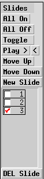
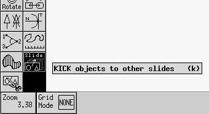
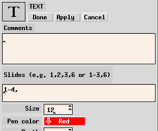
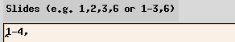
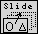

Xfig Slides
This fork of Xfig supports animating a static .fig figure for a presentation.
The best use case is for animating your latex document's .fig figures in beamer (latex).
When writing presentations in latex/beamer, I used to find generating the animated version of a figure very frustrating.
I used to start from the last animation slide (the fullest figure) and I used to gradually delete parts of the figure until I reached the first one slide.
When I wanted to make even 1 single change (e.g. spelling mistake) I had to redo the whole process from scratch.
If you had similar experience, then you should find this tool useful!
If not, then don't bother.
This is experimental software! Please don't blame me if you loose all your precious work, your whole system crashes or if your computer catches fire.
Proceed at your own risk!
Installation / Building instructions
Xfig should depend on development packages like these:
$ sudo apt-get install xutils-dev
$ sudo apt-get install libxpm-dev
$ sudo apt-get install libxaw7-dev
$ sudo apt-get install libjpeg-dev
$ sudo apt-get install libxi-dev
Download ( https://github.com/vporpo/xfig-slides )
$ git clone https://github.com/vporpo/xfig-slides.git
Build Instructions:
$ cd xfig_slides
$ mkdir build && cd build
$ ../configure --enable-slides
$ make
Run without installing it.
$ ./src/xfig
OR you can install it to your system (WARNING: This WILL REPLACE your original xfig!!!):
$ sudo make install
$ xfig
If you have any issue check the README file in the source tree.
New Features (slides):
This modified xfig allows you to generate animated figures for use in latex (beamer) presentation slides.
You can reuse an existing .fig file from your paper.
You only have to annotate the objects with slides numbers and xfig will take care of generating the sequence of .fig and .eps slides.
These are the main changes in the interface:
- The slides panel on the right side panel (below the depth layers).

- The Kick slide button, second to last button on the left hand side tool bar.

- The Kut (cut) slide button, last button on the left hand side tool bar.
- The File > Slides... menu item that brings up a dialog window.
- The slides text box when editing an object.

- The "Export Slides" button in the Export dialog window.
- New update action (bottom bar when Update (u) is selected). You can update the slides of objects.
Usage:
- Set slides: Use either:
- the slides text box  in the edit dialog window
- the "New Slide" button in the slides side bar to generate a new identical slide
- the Kick (k) editing tool  using left/right/middle click to copy objects to next/previous slides or to delete an object from a slide respectively
- the "Move Up" or "Move Down" buttons to move the selected slide upwards/downwards.
- You can "Play >" the figure animation forward or backwards using the "Play >"
 and Reverse-Play "<" buttons. There is also a reverse play button (>). Use their keyboard shortcuts (>, <) if you wish.
and Reverse-Play "<" buttons. There is also a reverse play button (>). Use their keyboard shortcuts (>, <) if you wish.
- If you need to change an object's attribute at specific slides (e.g. change the color on slide 4), then you will have to create a new object at same exact place and set the slides attributes for both the original object (slides: 1-3) and the new object (slides 4 onwards). This is quite tedious, so we created the KUT (shift + K) for this. It will split the object on the current slide with just a middle click.
You can also reverse this splitting caused by the KUT tool, by using the merge right (right click) and merge left (left click) capability.
- (Optional) File > Slides to see what is being created. Use "Generate Slides" to generate a FILE-XX.fig files, one for each slide. Use "Export Slides" to generate all the FILE-XX.eps files, one for each slide.
Example:
Download this sample .fig file slides_sample.fig that demonstrates how slides work.
FAQ
- I want to delete an object from a slide.
Deleting an object (using the Delete (d) tool) will remove it from all slides. Removing it from just one slide should be done instead with the Kick tool (k) and middle click on the object.
- How do I copy an object in the current slide?
Copying an object (using the copy tool (c)) copies all its properties, including its slides. Therefore once you copy an object visible to certain slides, its copy will be visible in the exact same slides as the original.
If you want to change the slides set of the copy, you can use edit (e), kick (k) or even update (u) on it.
- The contents of a compound disappear when I break the compound.
This is not a bug. When objects are glued together to form a compound, their slides set is no longer active. The slides set of the compound is the one that controls them. Once the compound is broken the objects are shown using their own slides sets which could be completely different from the compound slides set. If you wish to apply a certain set of slides to all objects in a compound, use the update (u) tool.
- I want to change properties of an object across slides.
This is now supported using the KUT tool (shift+k) + middle click. An object is "as is" across all slides, so in order to do this, the KUT tool will limit the slide numbers of the object to the current slide, and will create an exact copy at the same place, starting from the current slide. Now you can set any attributes of the newly created object and these will activate for the current + the remaining slides.
- I want to undo a KUT.
Use the merge action of the KUT tool (shift+k) + left/right click. This will merge the current object with the previous (left click) or next slide (right click). The current object's properties will override the others.
- The slides generated do not get aligned properly when used in beamer.
You have to use a bounding box (spanning all slides) to enclose all your objects in all slides. You can color the box using the same color as your presentation's background (white?) to make it invisible. The bounding box will make sure all slides are of equal size and they are aligned as you would expect.
- Can I write a complete presentation in this way?
You could but I would not recommend it.
Currently the maximum slide limit is set to 32 slides, which might not be large enough.
- I don't like this xfig anymore. How do I re-install my system's default xfig?
Re-installing your system's xfig package using your system's package manager should do the trick.
Home
{kind=link}
{kind=link}
{kind=link}
{kind=link}
{kind=link}
{kind=link}
{kind=link}
{kind=link}